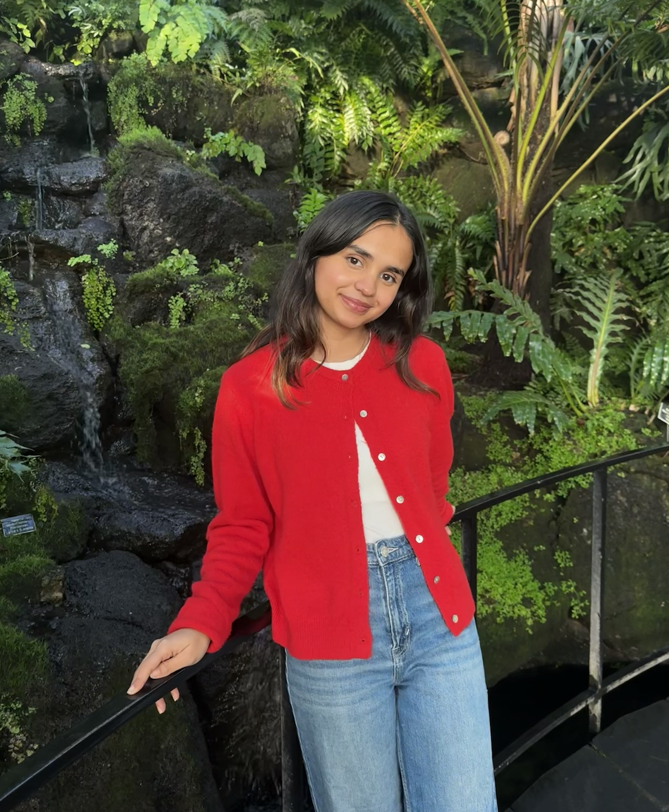
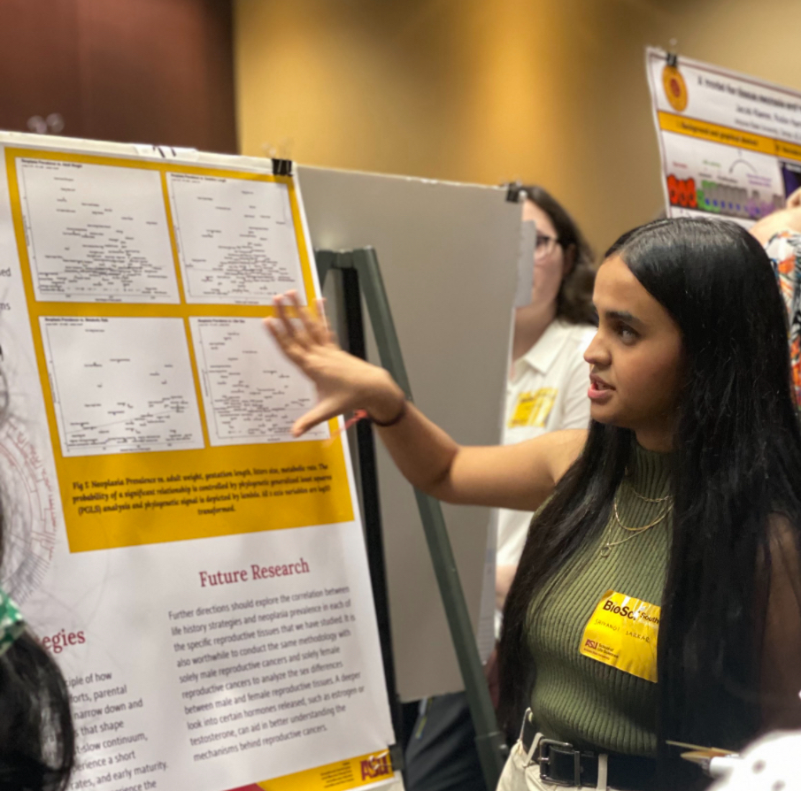
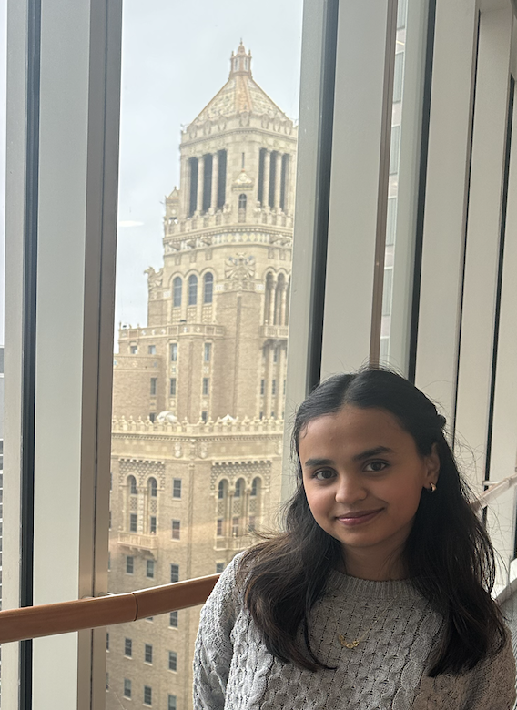
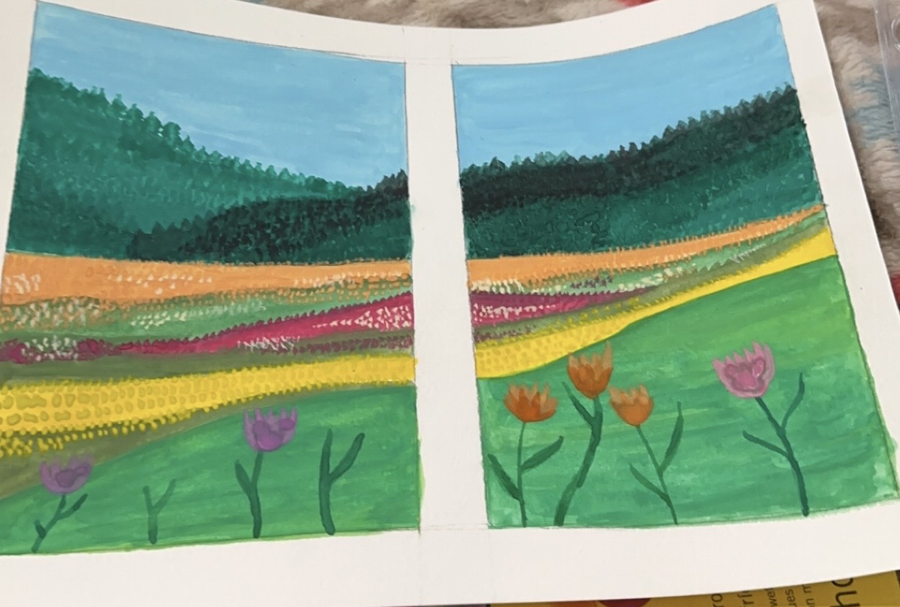
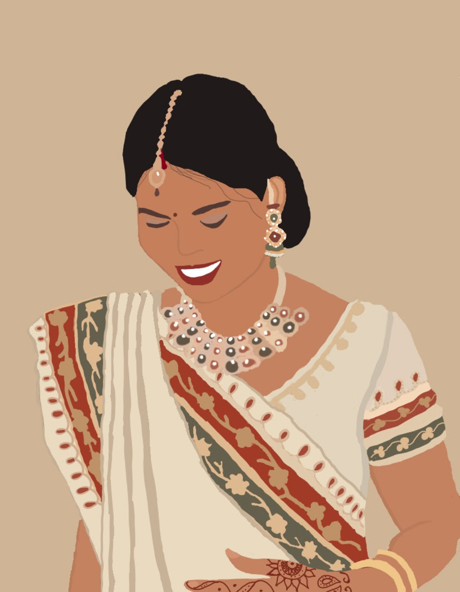
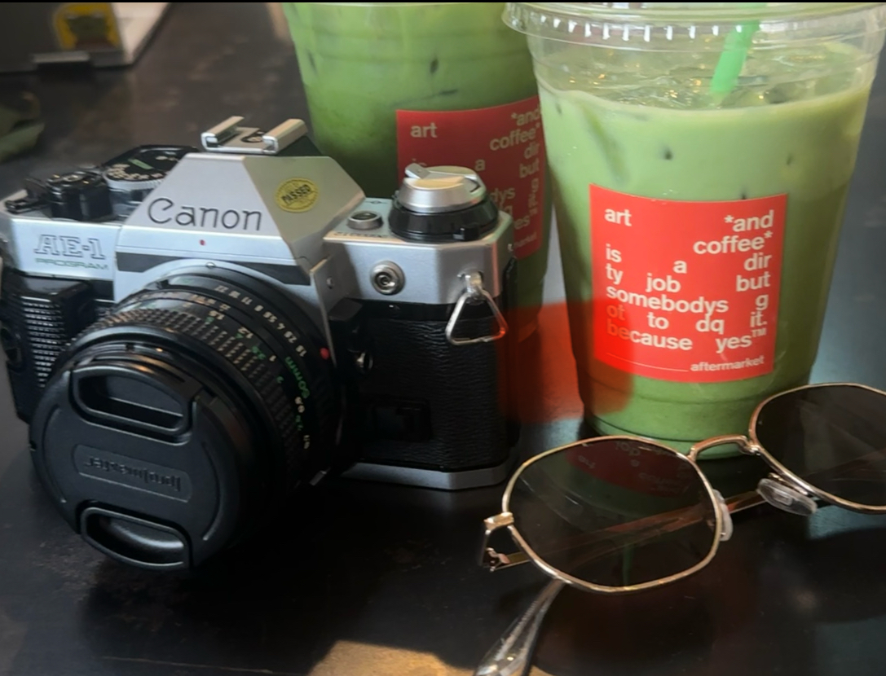
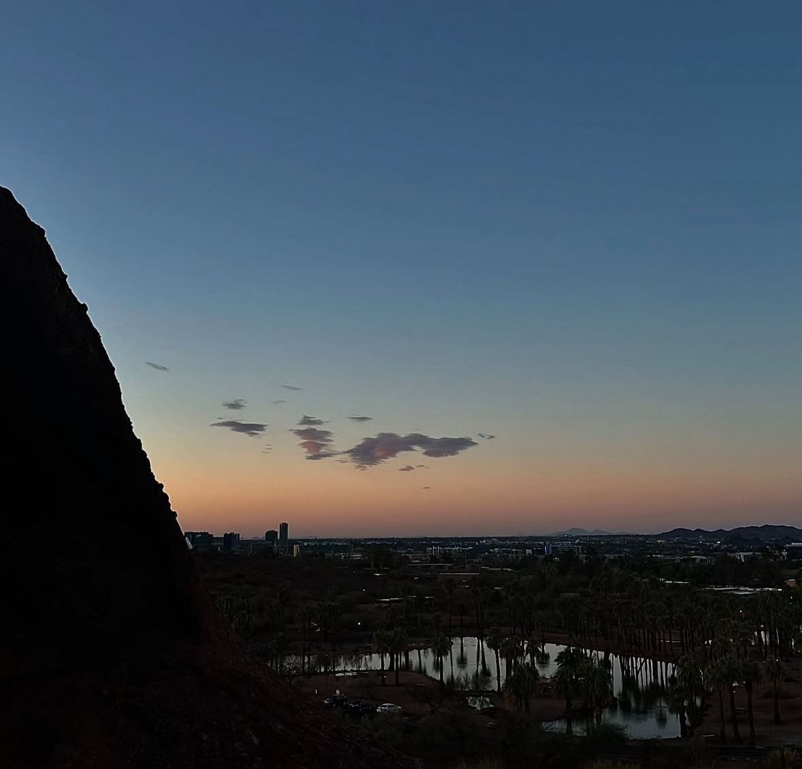

I'm a biomedical engineer specializing in quality, reliability, and validation. I'm passionate about ensuring medical products are safe, effective, and built to the highest standards.
I earned both my bachelor's and master's degrees in biomedical engineering from Arizona State University, where I built a strong foundation in engineering principles and research. Outside of work, I enjoy traveling, exploring new coffee shops, and food blogging.



Watercolor painting of a flowerfield near the mountains.

Digital art of an Indian Bride
Digital of Indian jewelry (Jhumka)

Capturing Matcha Moments at the Aftermarket
Matcha and a classic Caramel Machiato at Cartel Roasting Co.
A cup of Chai and warm Matcha at WhereUBean Coffee.
Fountain Hills is my official comfort spot.
Sunset while kayaking at Tempe Town Lake.

Sunrise at The Hole in the Rock at Papago Park.